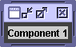
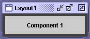
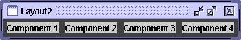
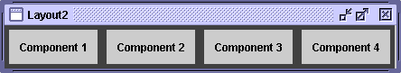
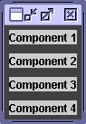
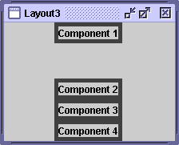
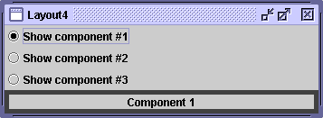
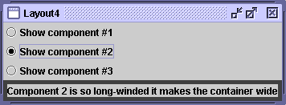
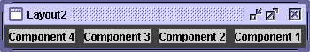

Feedback Form
|
|
Start of Tutorial > Start of Trail > Start of Lesson |
Search
Feedback Form |
In each of the following questions, choose the layout manager(s)
most naturally suited for the described layout. Assume that the
container controlled by the layout manager is a JPanel.
[Hint: Two sections that might help are A
Visual Index to Swing Components and Tips
on Choosing a Layout Manager.]
Question 1. The container has one component that should take up as much space as possible
  a.
BorderLayout
b.GridLayout
c.GridBagLayout
d. a and b
e. b and cAnswer 1: d.
BorderLayoutandGridLayouteasily deal with this situation. Although you could useGridBagLayout, it's much more complex than necessary.
Question 2. The container has a row of components that should all be displayed at the same size, filling the container’s entire area.
a.
FlowLayout
b.GridLayout
c.BoxLayout
d. a and bAnswer 2: b. This type of same-size layout — whether in a row, a column, or a grid — is what
GridLayoutis best at.
Question 3. The container displays a number of components in a column, with any extra space going between the first two components.
  a.
FlowLayout
b.BoxLayout
c.GridLayout
d.BorderLayoutAnswer 3: b.
BoxLayoutlays out components in either a column or a row. You can specify extra space using an invisible component.
Question 4. The container can display three completely different components at different times, depending perhaps on user input or program state. Even if the components’ sizes differ, switching from one component to the next shouldn’t change the amount of space devoted to the component.

a.
SpringLayout
b.BoxLayout
c.CardLayout
d.GridBagLayoutAnswer 4: c.
CardLayoutexists to allow components to share the same space. Although it's simpler to use aJTabbedPanecomponent to control an area,CardLayoutis the solution when you don't want tabs.
Exercise 1. Implement the layout described and shown in question 1.
Answer 1: SeeLayout1.java. Here's the code that implements the layout:
JPanel p = new JPanel(new BorderLayout()); p.add(createComponent("Component 1"), BorderLayout.CENTER); frame.setContentPane(p);
Exercise 2. Implement the layout described and shown in question 2.
Answer 2: SeeLayout2.javaJPanel p = new JPanel(new GridLayout(1,0)); p.add(createComponent("Component 1")); p.add(createComponent("Component 2")); p.add(createComponent("Component 3")); p.add(createComponent("Component 4")); frame.setContentPane(p);
Exercise 3. Implement the layout described and shown in question 3.
Answer 3: SeeLayout3.javaJPanel p = new JPanel(); p.setLayout(new BoxLayout(p, BoxLayout.PAGE_AXIS)); p.add(createComponent("Component 1")); p.add(Box.createVerticalGlue()); p.add(createComponent("Component 2")); p.add(createComponent("Component 3")); p.add(createComponent("Component 4")); frame.setContentPane(p);
Exercise 4. Implement the layout described and shown in question 4.
Answer 4: SeeLayout4.java...//Where the radio buttons are set up: for (int i= 0; i < strings.length; i++) { ... rb[i].setActionCommand(String.valueOf(i)); ... } ...//Where the panel to contain the shared-space components is set up: cards = new JPanel(new CardLayout()); for (int i = 0; i < strings.length; i++) { cards.add(createComponent(strings[i]), String.valueOf(i)); } ...//In the action listener for the radio buttons: public void actionPerformed(ActionEvent evt) { CardLayout cl = (CardLayout)(cards.getLayout()); cl.show(cards, (String)evt.getActionCommand()); }
Exercise 5. By adding a single line of code, make the program you wrote for Exercise 2 display the components from right-to-left, instead of from left-to-right.
Answer 5: You can change the horizontal orientation using the
setComponentOrientationmethod defined by theComponentclass. For example:p.setComponentOrientation(ComponentOrientation.RIGHT_TO_LEFT);
|
|
Start of Tutorial > Start of Trail > Start of Lesson |
Search
Feedback Form |